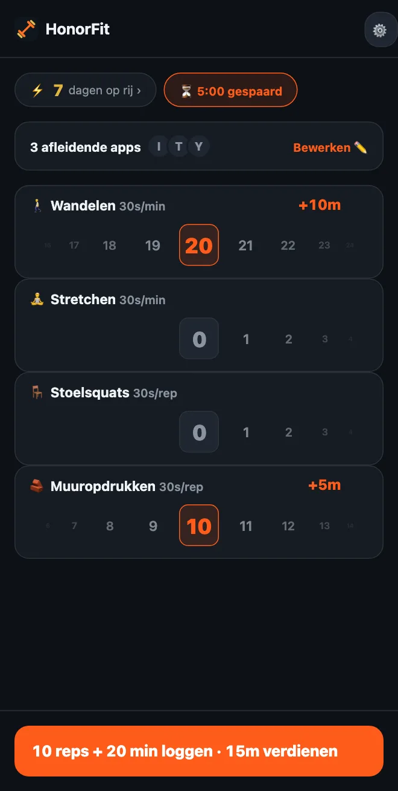

Geen push-ups? Rustige oefeningen om je apps te ontgrendelen
Hoi allemaal! HonorFit staat vooral bekend als app blocker met opdrukken (Engels): je apps blijven op slot tot je wat reps doet en ze zelf logt. Maar als je polsen, schouders of knieën daar niet zo blij van worden, als je de hele dag achter een bureau zit, of als push-ups er nu gewoon niet in zitten, is dat helemaal prima.
Om de push-ups ging het mij eigenlijk nooit. Het gaat om een kleine drempel tussen jou en het scrollen, eentje die toevallig ook goed voor je is. Een rondje om de buurt doet dat net zo goed. Zo stel je HonorFit in rond dingen die je echt kunt doen.
Als je de gratis versie hebt
Gratis krijg je de vier standaardoefeningen: push-ups, sit-ups, optrekken en squats. Daarvan zijn squats het rustigst, en die zijn elk 30 seconden waard.
En omdat het op erewoord (Engels) werkt, controleert niemand hoe jouw squat eruitziet. Is een volledige squat te veel, dan telt opstaan uit een stoel en weer gaan zitten ook. Hetzelfde geldt voor push-ups tegen een muur of het aanrecht. Jij bepaalt wat een rep is, en je logt hem gewoon eerlijk.
Met Pro: kies je eigen
Met Pro (in de VS $3 per maand of eenmalig $19,99; per land en valuta verschilt de prijs, en de store laat je jouw prijs zien) kun je oefeningen toevoegen, hernoemen en verwijderen, en instellen wat elke oefening oplevert. Je komt er via het tandwiel op het startscherm en dan de kaart Oefeningen. Ik heb elke stap van de editor hier beschreven. Dit zijn de dingen waar ik naar zou kijken.
Workouts op tijd (gelogd in minuten)
Zet een oefening op Minuten, of tik op een van de suggesties met een ⏱. Deze passen hier goed:
- 🚶 Wandelen. Mijn favoriet hiervoor. Waarschijnlijk de makkelijkste winst die er is.
- 🧘 Yoga, of hernoem het naar Stretchen als dat meer is wat je doet.
- 🏊 Zwemmen en 🚴 Fietsen, allebei vriendelijk voor je gewrichten.
- 🪷 Mediteren. Geen sport, maar het zit erin, en tien rustige minuten tegen tien minuten TikTok is best een goede ruil.
Workouts op tijd beginnen op 30 seconden app-tijd per minuut, dus 20 minuten wandelen levert 10 minuten op. Het wiel telt hele minuten, tot 100 tegelijk.
Oefeningen voor aan je bureau (gelogd in reps)
Tik op ＋ Oefening toevoegen en typ een naam. Een paar die werken op kantoor of in een klein appartement, zonder spullen:
- Stoelsquats (opstaan en gaan zitten): sta op uit je stoel, ga weer zitten.
- Muuropdrukken of bureau-push-ups: push-ups tegen een muur of een stevig bureau. Hoe hoger het oppervlak, hoe makkelijker.
- Kuitheffen: op je tenen, weer omlaag. Kun je doen terwijl je op de magnetron wacht.
- Marcheren op de plaats: de suggestie Knieheffen, maar dan rustiger. Hernoem hem als je wilt.
- Bilbrug en kegeloefeningen: stil, zonder spullen, en kegeloefeningen kun je in een vergadering doen zonder dat iemand het doorheeft. Ik schreef er een hele post over.
Statische oefeningen (plank, wall sit)
Omdat het minutenwiel hele minuten telt, past een plank van 20 seconden daar niet echt in. Ik zou statische oefeningen op Reps laten en bepalen wat een rep is, zoals ‘één keer 20 seconden vasthouden’. Plank en Wall sit staan allebei in de suggesties.
Wat moet elke oefening opleveren?
Nieuwe oefeningen beginnen op 30 seconden per rep. Je kunt per 5 seconden omhoog of omlaag. Een paar uitgangspunten:
| Oefening | Telt in | Levert op | Bijvoorbeeld |
|---|---|---|---|
| 🚶 Wandelen | Minuten | 30s per minuut | 20 minuten wandelen = 10 min |
| 🧘 Stretchen | Minuten | 30s per minuut | 10 minuten = 5 min |
| 🪑 Stoelsquats | Reps | 30s per rep | 10 = 5 min |
| 🧱 Muuropdrukken | Reps | 30s per rep | 10 = 5 min |
| Kuitheffen | Reps | 10–15s per rep | 20 × 15s = 5 min |
| Plank | Reps (1 rep = 20s vasthouden) | 1 min per rep | 3 keer vasthouden = 3 min |
Dit zijn gewoon mijn inschattingen van wat eerlijk voelt. Het juiste getal is er een dat je echt betaalt in plaats van te sjoemelen. Is wandelen de gewoonte die je het liefst wilt opbouwen, maak het dan meer waard, zoals 1 minuut per minuut.

Een paar setups om te jatten
- Kantoordag: Stoelsquats, Muuropdrukken, Kuitheffen, Wandelen.
- Rustig aan: Wandelen, Stretchen, Stoelsquats, Muuropdrukken (dat is de screenshot hierboven).
- Kalm: Wandelen, Yoga, Mediteren.
- Gehorig appartement: Bilbrug, Kegeloefeningen, Stoelsquats, Wandelen.
Ik zou het bij drie of vier houden, want elke oefening krijgt een eigen wiel op het startscherm.
En heb je een blessure, pijn of een aandoening, vraag dan je huisarts of een fysiotherapeut wat goed voor je is. Ik maak een app blocker; ik ben niet de aangewezen persoon voor vragen over je knieën, haha.
HonorFit Blocker is een gratis app blocker voor iPhone en Android. Op erewoord, geen camera, en er gaat niks van je telefoon af. Eigen oefeningen en workouts op tijd zitten in Pro. Het is niet voor iedereen, maar misschien vinden sommigen van jullie het wel leuk!